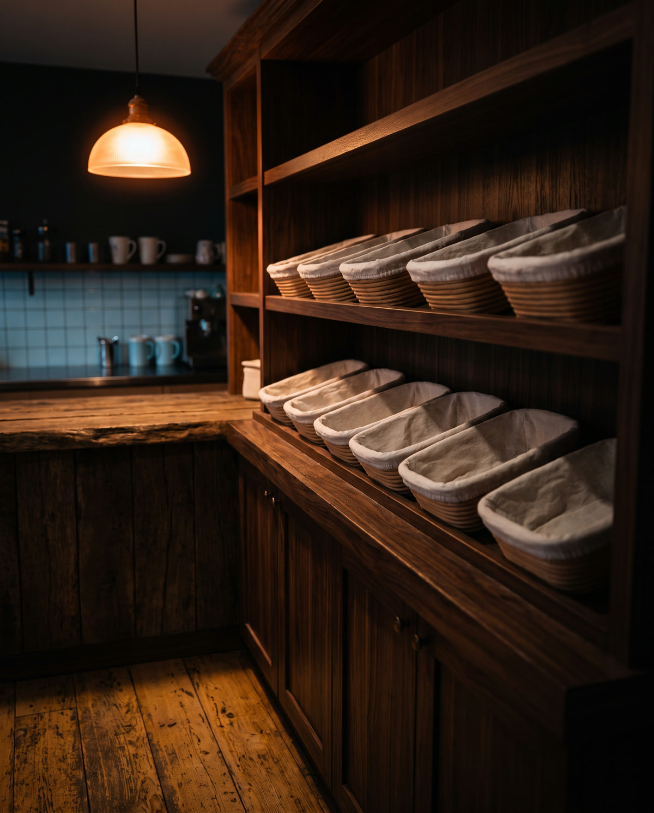
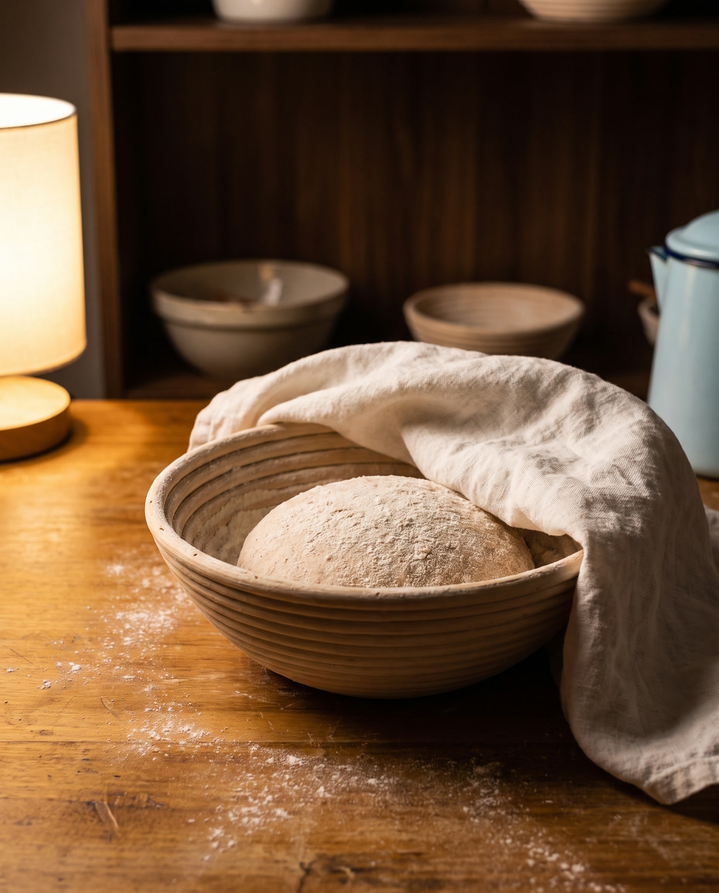
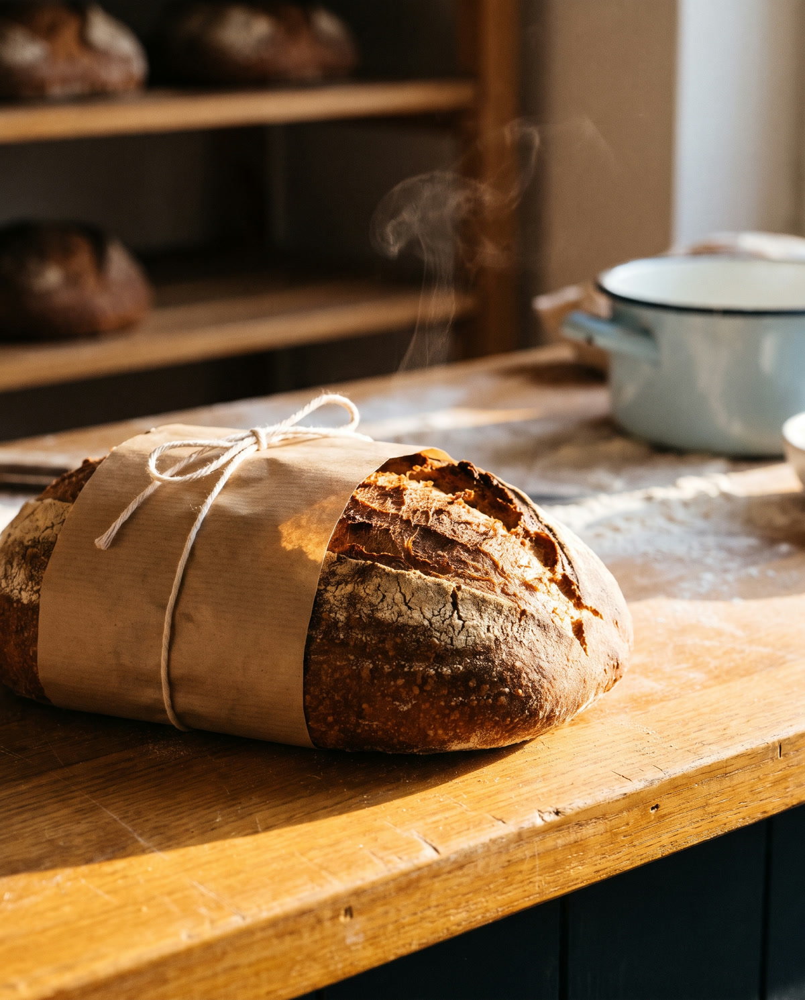
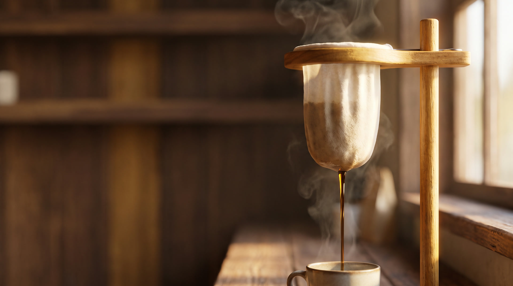

Pão de fermentação natural
Farinha, água, sal e tempo. A massa descansa dois dias e vai ao forno de madrugada.
Café coado na hora, no pano.
O pão dorme. Você acorda com ele quentinho.
Seu pão de amanhã, guardado com seu nome.
Reserve até as 20h e retire quentinho a partir das 7h.
Café coado no pano e pão de fermentação natural de 48 horas. Reserve hoje, retire quentinho amanhã.
Reservar meu pãoFarinha, água, sal e tempo. A massa descansa dois dias e vai ao forno de madrugada.
Coado na hora, xícara por xícara. Torra média, doce e encorpado, sem aquele azedo.
Sai do forno a cada meia hora. Frio, aqui, não.
Segure o botão e deixe pingar. Solte cedo e o café espera por você.

Escolha o pão e o horário em que você passa.

Ela dorme 48 horas e vai ao forno de madrugada.

A partir das 7h, embrulhado no papel, com seu nome.

Um balcão de freijó de demolição, catorze lugares, janela para a rua e luz de manhã. Tem Wi-Fi, tomada perto de quase toda mesa e ninguém olhando o relógio por você.
"O pão de queijo chega quente toda vez. Não sei como, mas chega."
"Reservo o pão no domingo à noite e na segunda está lá, com meu nome."
"Fico duas horas com um café só e ninguém me olha torto."
Porque leva 48 horas, farinha de moinho pequeno e nenhum fermento químico. Você sente no primeiro pedaço, e ele dura três dias sem endurecer.
Até as 20h, para retirar no dia seguinte a partir das 7h.
A gente guarda até as 11h. Depois disso ele vai para a vitrine, e você não paga nada.
A torra é média, pensada para o pano. Fica doce e encorpado. Se quiser mais suave, é só pedir no balcão.
Dá. Tem Wi-Fi, tomada perto de quase toda mesa e ninguém apressa você.
Leite vegetal todos os dias, sem custo extra. E o pão de fermentação natural não leva leite.
Reserve até as 20h. Retire a partir das 7h, quentinho.
Reservado. Amanhã cedo ele sai do forno com o seu nome.